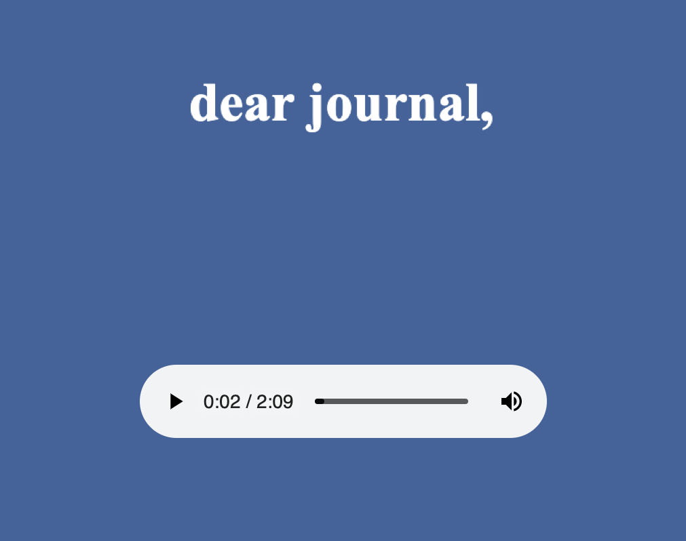
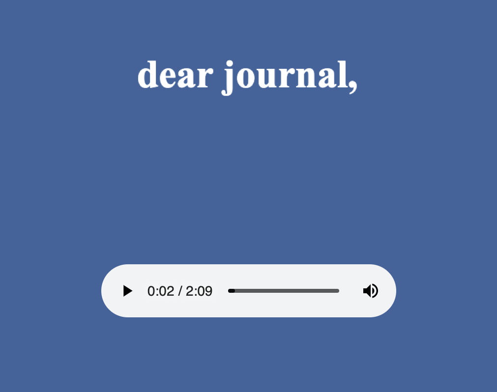
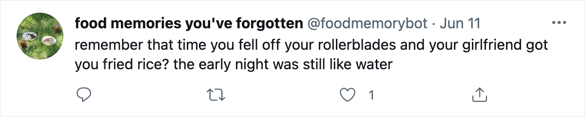
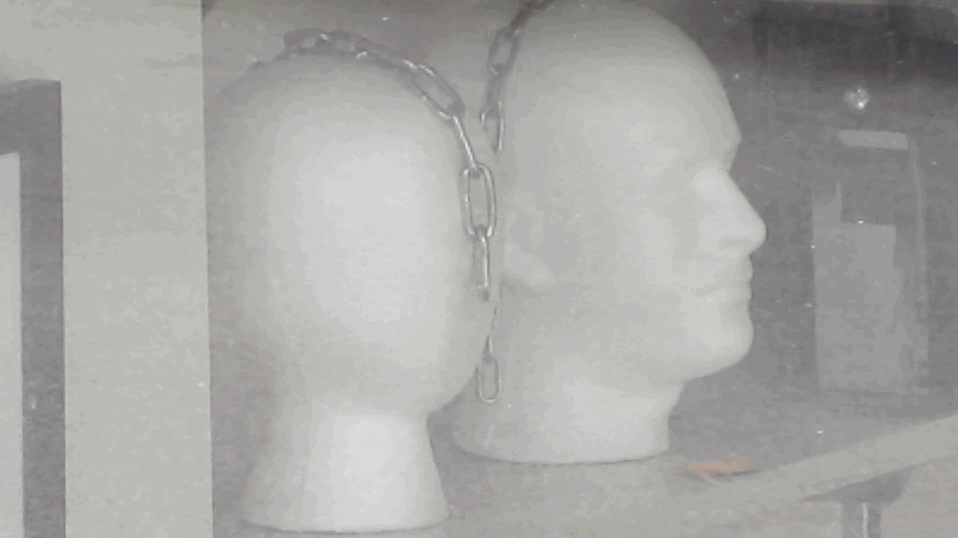
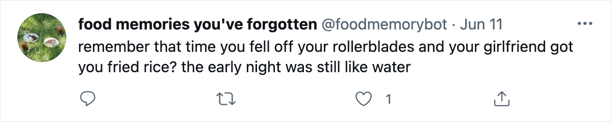
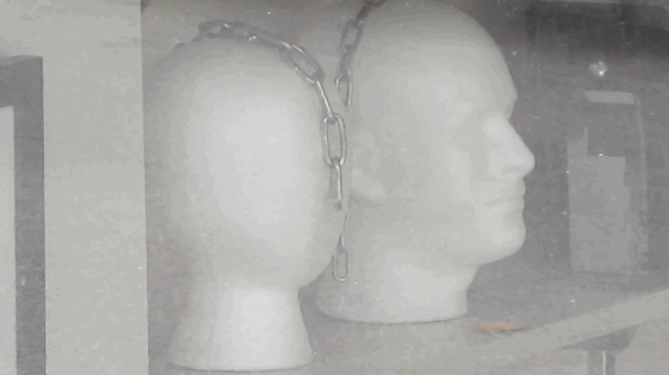

 




sign my guestbook
10 may 2021
emotional tree
sappy
as a child i would duck under it to get through and id always get sap on me
like the stars were the flowers, being reflected back. the sky was a giant mirror
we were the only two people in the world and everyone had disappeared.. suicide pact. would always be wondering if there was someone else. the terrifying thought of only one person. how the suicide would have to be exactly simultaneous